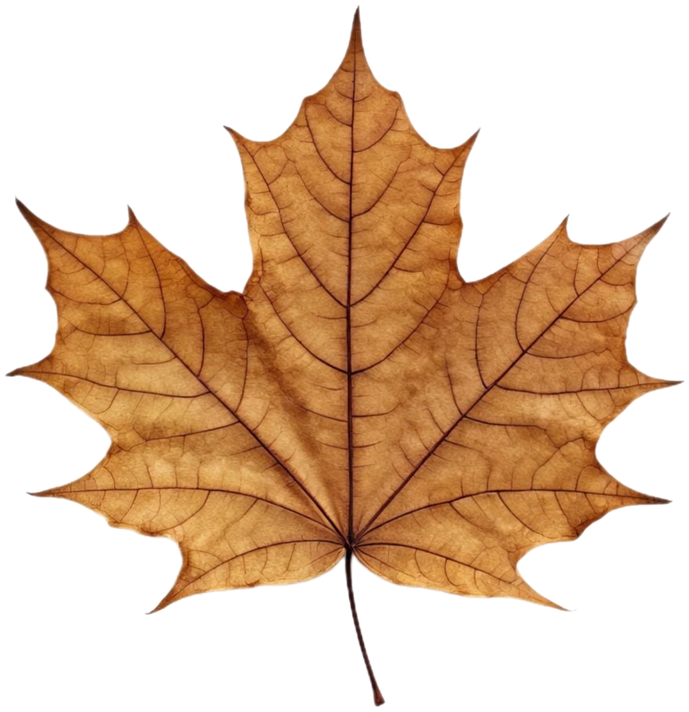
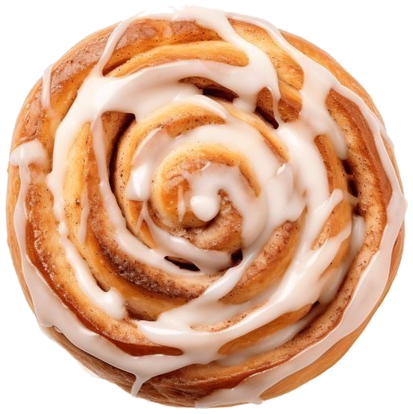
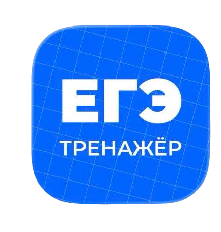

вариант 3 · коллаж, свои стикеры · вертикаль 2:3 · 1000 × 1500



короче,
хватит бояться ЕГЭ
Пробники, разбор ошибок и трекер прогресса — в одном приложении, бесплатно.
ЕГЭ Тренажёрссылка под пином
Паспорт пина
Заголовок
Хватит бояться ЕГЭ — пробники и трекер прогресса бесплатно
Описание
ЕГЭ Тренажёр: пробники, разбор ошибок и трекер прогресса в одном приложении. Скачать бесплатно.
Доска
ЕГЭ Тренажёр · Подготовка к ЕГЭ
Ключевые
егэ тренажёр, подготовка к егэ, егэ 2027, 11 класс, приложение для егэ
Alt-текст
Коллажный пин ЕГЭ Тренажёра: заголовок «хватит бояться ЕГЭ», крупный лист и булочка с корицей (настоящие фото) и огромная иконка приложения, выходящая за край
Стикеров теперь два, зато крупнее — не перегружают фото. Фон убран программно, точнее, чем в прошлый раз (обрезка кружки была багом порога — переделала по цвету конкретного фона, не по общему «светлое/бледное»). Иконка ЕГЭ Тренажёра — без рамок и подложек, огромным пластом в углу.